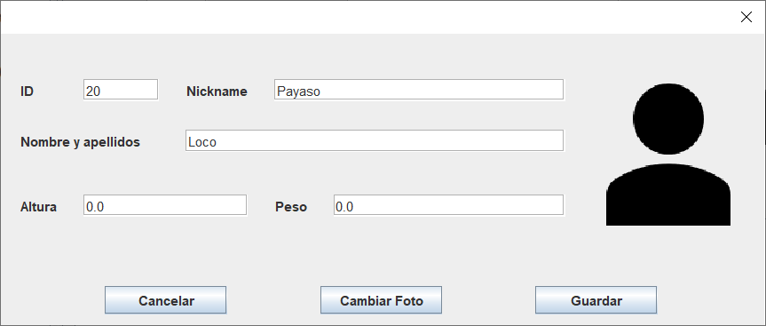

El sistema de altas es similar para Clientes y Ejercicios.
Hay dos tipos de altas.
Alta de clientes y ejercicios
En ambos casos, pulsaremos sobre el botón "Nuevo" que aparece bajo el listado de la tabla.
Al pulsar el botón, se mostrará la ventana de alta, la cual es similar a la de actualización que ves a continuación.
Esta ventana está sujeta a una validación de datos estricta y se te informará cada vez que no se cumpla con lo estipulado.

Alta de actividades (clientes - ejercicios)
Para realizar esta alta, pulsaremos el botón de "Nuevo" bajo el listado de actividades que se muestra en la sección de detalles.
Este botón nos llevará a la ventana de creación de actividades.
Consta de dos desplegables para escoger al cliente y ejercicio, un selector de fecha como calendario y
campos para número de series, peso y comentarios sobre la actividad.